Cloudflare OS 入門
小さなアプリを、安全につなぎながら作る
頼むだけで、仕事の道具が手元に残る。
表紙 · 確定
小さなアプリを、安全につなぎながら作る
頼むだけで、仕事の道具が手元に残る。
目次 · ページ番号を本文に同期
はじめに · 1/2
こんにちは。僕（中川将広）は、30 代の IT 企業に勤める会社員です。日々の業務では、組織の標準アプリを使いつつ、自分の担当だけに残る「ちょっとした不便」にも頭を悩ませていました。
売上管理や勤怠のような大きい仕組みは、会社が用意した公式ツールで足ります。困るのは、その外側です。自分だけが持っている提携先との手順。二人だけで回しているチェック表。部署内の小さな集計。開発チームに「標準アプリにしてほしい」と頼んでも、優先度が上がらない。かといって、自分でアプリを一から作るには工数がかかりすぎる。そんなすき間を、ずっと抱えていました。
そんなとき出会ったのが、Cloudflare OS でした。生成 AI とおしゃべりしながら、個人がちょっと欲しいアプリをその場で作り、そのまま使える「場所」です。大きい業務システムを置き換えるものではなく、人ごとに違う業務の「少しだけ改善したい」に応えてくれる OS だと、触ってみて確信しました。
実際に使い始めると、チャットに頼むだけでスライドや小さな道具が手元に残ります。コードを書かなくても形になり、足りなければ会話で足せます。同僚と一緒に触る共有も、アプリのテンプレートとして配ることもできます。公式の言葉では、それが Gadget（個人用の小さなアプリ）や Blueprint（アプリのテンプレート）と呼ばれている部分です。
はじめに · 2/2
もう一つ、僕が大きく感じたのは、社内の閉域で使える点です。自社のアカウントに載せ、入り口を絞り、外のサービスへの接続は Gatekeepers 経由にできます。鍵を AI に丸ごと渡さず、必要なリソースだけ通す。便利さと安全を、同じ土台の上で考えられます。
Cloudflare 社内では、エンジニア以外も含め多くの人が日々これを使っているそうです。オープンソースとして公開された狙いは、そのまま Cloudflare のブランドを借りるだけでなく、自社の用語や手順を載せた「Your Company OS」を持てるようにすることにあります。
この本では、僕が Cloudflare OS をどう捉え、どう触ってきたかを、画面操作中心に解説していきます。プログラミングの深い知識は前提にしません。ボタンとチャットの流れが追えれば十分です。第1章で全体像と用語、第2章で起動、第3章で画面、第4章で機能、第5章から実践を三つ通します。急ぎなら第2章のあと第5章へ進み、用語で詰まったら第1章と第4章へ戻ってください。
生成 AI に頼むだけで一瞬アプリができ、一緒に使える環境までそろう。そんな働き方の一端を、この本で体験してもらえたら嬉しいです。皆さんの「ちょっと欲しい」が、標準開発の待ち行列に並ばずに済む一助になれば幸いです。本書は smilior.com の中川将広による、非公式の学習用ガイドです。
※本書籍は 2026 年 8 月執筆時点の情報に基づいています。Cloudflare OS は Early Access のため、画面内容が変更される場合がございます。あらかじめご了承ください。本書は公式マニュアルの置き換えではなく、学習用の入門ガイドです。
第1章 · 章扉
1
用語と全体像を、かみ砕いて
第1章 · 1 ひとことで言うと
僕が Cloudflare OS をひとことで言うなら、「生成 AI とおしゃべりしながら、ちょっと欲しいアプリや資料を作って、そのまま使える場所」です。Windows や macOS のように PC に入れる OS ではありません。ブラウザで開き、チャットに頼むと、スライドや小さなアプリが手元に残ります。
ふつうのチャット AI だと、いい答えも会話の流れのなかで終わりがちです。Cloudflare OS では、できたものが Gadget として残るので、翌日も同じ道具を開き直せます。標準の業務アプリを置き換える話ではなく、すき間を埋めるための場所です。

図: ふつうの OS（PC）と Cloudflare OS の違い
第1章 · 2 覚えておきたい三つ
この本の文章のなかでは、エージェント、Gadget、Gatekeepers という言葉がよく出てきます。それぞれの役割は、次の図のとおりです。細かい操作は第3章、仕組みの深い話は第4章に回します。
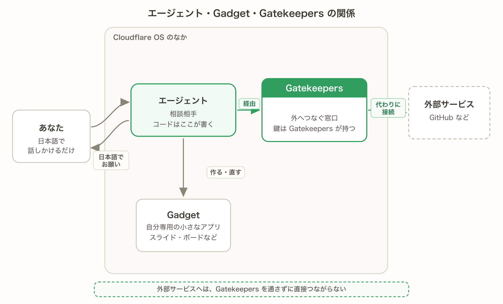
図: 3つの登場人物。お願いはエージェントへ、外部への接続はかならず Gatekeepers 経由
第1章 · 3 会社の入口は一つ、中は人ごと
会社で Cloudflare OS を一つ用意しても、中で動くアプリの実行環境は人ごとに分かれます。Gadget は既定では個人用のアプリとして作られます。ほかの人と使いたいときは、コピーして使うか、共有して一緒に使うかの二通りです。詳細は次の図のとおりです。どちらを選ぶかは第4章でまた出てきます。
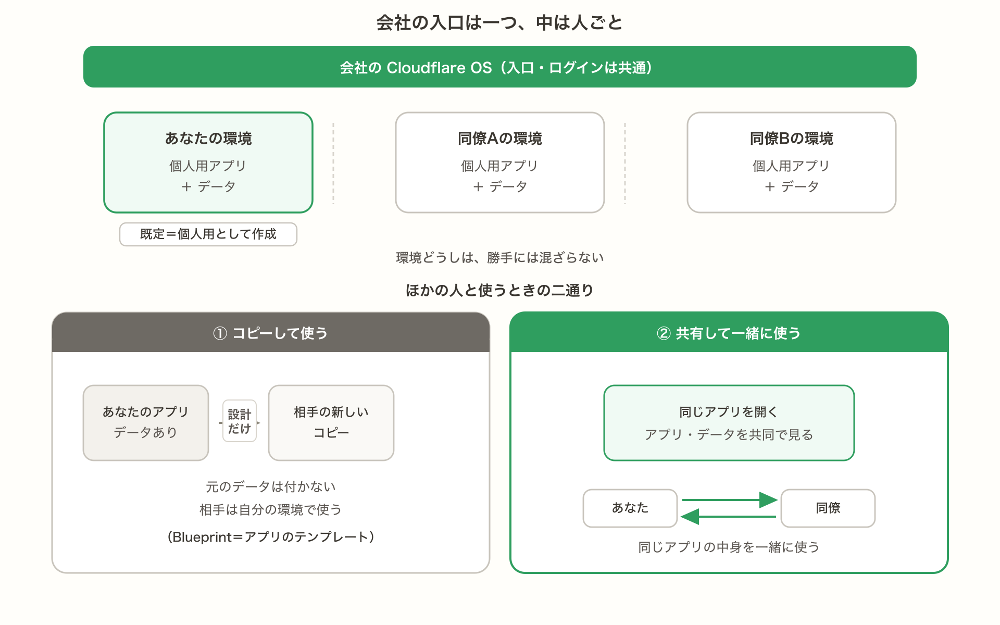
図: 入口は共通、環境は人ごと。コピーして使う／共有して一緒に使う
第1章 · 4 この本の進め方
この本は、読者自身の環境に Cloudflare OS を用意して手を動かす前提で進めます。パソコンでローカル起動する、または自分（自社）の Cloudflare アカウントに載せる、のどちらかで構いません。画面を眺めているだけでは、第5章以降の実践がしづらいです。
章の順番は、だいたい次のとおりです。急ぎの人は第2章のあと第5章へ進み、用語で詰まったら第1章と第4章に戻ってください。
操作のイメージだけ先に置いておくと楽です。頼む → 形になる → 見て直す → 渡す（コピーして使う／共有して一緒に使う）。次の章から、実際に入口を開きます。
第1章 · 5 キーワード早見
この本でよく出る言葉です。厳密な定義より、「たとえ」で覚えてください。あとから見返す用の早見表です。
| ことば | たとえ |
|---|---|
| エージェント | 自然言語で話しかけ、コードを書いてもらう相手 |
| Gadget | 自分専用の小さなアプリ |
| Blueprint | アプリのテンプレート（データは付かない） |
| Gatekeepers | 外のサービスへつなぐ仕組み |
| ワークスペース | いま作業する場所（会話とアプリがそろう） |
| Your Company OS | 自社の言葉やつなぎ先を載せた自社向けの場所（はじめに・おわりに。配り方は第4章） |
第1章 · まとめ
ポイント
ここまで Cloudflare OS の概要を説明してきましたが、文章だけだとパッとイメージしにくいかもしれません。まずは環境を用意して動かしてみると、すぐに掴めてきます。手を動かしながら、理解を深めていきましょう。
第2章 · 章扉 · 確定
2
手元のパソコンで動かす準備
第2章 · 1 環境の説明
Cloudflare OS の使い方（置き方）は、大きく分けて三種類あります。
この書籍では、そのうちローカルのパソコンにインストールし、その中で検証していく進め方をとります。手元で起動し、画面を開き、第5章以降の実践まで同じ環境で試せます。手順は次の節から具体的に書きます。
画面の説明やキャプチャは、主に macOS を例にします。Windows でのインストールや起動の手順も基本は同じです。メニュー名やターミナルの開き方が少し違う程度で、このあとのコマンドやブラウザでの確認はそのまま使えます。
社内で本格的に運用する場合は、社内のサーバーや会社の Cloudflare アカウント上で動かすことになります。設定やセキュリティの方針は組織ごとに異なります。その手順や設計は本書の範囲には含めません。まずは手元で動かして全体像を掴むことが、この章のゴールです。
注意
Cloudflare OS は Early Access です。画面や手順は更新で変わることがあります。つまずいたら公式の README もあわせて確認してください。
第2章 · 2 ローカルにインストールをしよう！
ここからは、パソコンに Cloudflare OS を入れて動かします。公式も「pnpm を入れて起動」が基本です（https://github.com/cloudflare/cloudflare-os ）。
画面のボタン名やデザインは将来変わることがあります。覚えるのは「何を入れるか」です。入れるものは次の4つです。
| 順番 | 入れるもの | ひと言 |
|---|---|---|
| 1 | Node.js | 土台。公式: https://nodejs.org/ |
| 2 | Git | ソースを取る。公式: https://git-scm.com/ |
| 3 | pnpm | 起動に使う。公式: https://pnpm.io/ |
| 4 | Cloudflare OS 本体 | GitHub から取得して起動 |
このあと出てくる「コマンド」は、ブラウザの検索窓ではなく、専用のアプリに打ちます。Mac はターミナル、Windows はPowerShellです。開き方は、それぞれの OS の手順のいちばん最初に書いてあります。自分の OS のページだけ読んでください。
第2章 · 3 macOS の手順
0. まず「ターミナル」を開く
このあとの文字（コマンド）は、ブラウザの検索窓ではなく、ターミナルというアプリに打ちます。文字を入力できる専用の窓です。
開き方の例です。
開いたら、この本のコード枠の文字をコピーして貼り付け、Enter キーを押します。1行ずつが安心です。
1. Node.js を入れる
Safari などで https://nodejs.org/ を開きます。いちばん目立つダウンロード（「Get Node.js」など）から入れます。出てきたインストーラ（.pkg など）をダブルクリックして完了まで進めます。ボタン名は変わることがありますが、「ダウンロード → インストール完了」ができれば大丈夫です。
入れ終わったら、いったんターミナルを閉じて、もう一度開き、次を入力して Enter します。
node -v npm -v
それぞれ番号（例: v24.x.x）が出れば成功です。
2. Git を入れる
ターミナルに次を入力して Enter します。初めての Mac では、途中で開発ツールのインストール確認が出ることがあります。「インストール」を選んでください。
xcode-select --install git --version
git version … のように番号が出れば OK です。うまくいかないときは https://git-scm.com/ の macOS 案内も見てください。
第2章 · 3 macOS · pnpm
3. pnpm を入れる
同じターミナルで、次を実行します。1行ずつコピーして Enter で大丈夫です。
npm install -g pnpm
pnpm -v
番号が出れば成功です。出ないときはターミナルをいったん閉じて開き直し、もう一度試してください。
第2章 · 3 macOS · 起動
4. Cloudflare OS を取って起動する
まだターミナルを開いたままにしておきます。次の行を、上から順にコピーして Enter します（1行ずつが安心です）。
cd ~ git clone https://github.com/cloudflare/cloudflare-os.git cd cloudflare-os pnpm install pnpm run-local
意味はざっくり、「自分のフォルダへ移動 → 公式のプログラムをダウンロード → 中に入る → 必要な部品を入れる → 起動」です。初回は数分かかることがあります。止めるときは、ターミナルで Control + C を押します。
5. ブラウザで開く
ターミナルはそのままにしておき、Safari や Chrome を開きます。いちばん上のアドレス欄（URL を入れる場所）に次を入力して Enter します。
http://localhost:8787
Cloudflare OS の画面が出れば、Mac での準備は完了です。
第2章 · 4 Windows の手順
0. まず「PowerShell」を開く
このあとの文字（コマンド）は、ブラウザの検索窓ではなく、PowerShellというアプリに打ちます。文字を入力できる専用の窓です。
開き方の例です。
開いたら、この本のコード枠の文字をコピーして貼り付け、Enter キーを押します。1行ずつが安心です。
1. Node.js を入れる
Edge や Chrome で https://nodejs.org/ を開きます。いちばん目立つダウンロード（「Get Node.js」など）から入れます。出てきたインストーラ（.msi など）を実行して完了まで進めます。ボタン名は変わることがありますが、「ダウンロード → インストール完了」ができれば大丈夫です。
入れ終わったら、いったん PowerShell を閉じて、もう一度開き、次を入力して Enter します。
node -v npm -v
それぞれ番号が出れば成功です。
2. Git を入れる
https://git-scm.com/ を開き、Windows 用（Git for Windows）のインストーラをダウンロードして実行します。よく分からない選択肢は、そのまま「Next」で進めて大丈夫なことが多いです。入れたあと PowerShell を開き直し、確認します。
git --version
番号が出れば OK です。
第2章 · 4 Windows · pnpm
3. pnpm を入れる
同じ PowerShell で、次を実行します。1行ずつコピーして Enter で大丈夫です。
npm install -g pnpm
pnpm -v
番号が出れば成功です。出ないときは PowerShell をいったん閉じて開き直し、もう一度試してください。
第2章 · 4 Windows · 起動
4. Cloudflare OS を取って起動する
PowerShell を開いたまま、次の行を上から順にコピーして Enter します。
cd $HOME git clone https://github.com/cloudflare/cloudflare-os.git cd cloudflare-os pnpm install pnpm run-local
意味はざっくり、「自分のフォルダへ移動 → 公式のプログラムをダウンロード → 中に入る → 必要な部品を入れる → 起動」です。初回は数分かかることがあります。止めるときは、PowerShell で Ctrl + C を押します。
5. ブラウザで開く
PowerShell はそのままにしておき、Edge や Chrome を開きます。いちばん上のアドレス欄（URL を入れる場所）に次を入力して Enter します。
http://localhost:8787
Cloudflare OS の画面が出れば、Windows での準備は完了です。
うまくいかないとき
「認識されません」「command not found」は、入れた直後のウィンドウ再起動で直ることが多いです。Node.js → Git → pnpm の順に入っているかも確認してください。
第2章 · まとめ枠 · 確定
pnpm run-local で http://localhost:8787 を開けるポイント
お疲れさまです。ここまでで、Cloudflare OS を手元に入れるところまでは完了です。次の章ではアカウントを登録し、画面の見方や使い方を一つずつ見ていきます。
第3章 · 章扉
3
アカウント登録から、画面を知る
第3章 · 1 アカウントを作る
第2章までで、Cloudflare OS は手元で起動できています。この章では初めて使う人の手順で進めます。まず自分用のアカウントを作り、サインインし、画面の置き場所を覚えます。
ブラウザで http://localhost:8787 を開くと、次のサインイン画面が出ます。まだアカウントがない状態がスタートです。

図: サインイン画面。初めての人は Create one を選ぶ
画面の下に「Don't have an account? Create one」とあります。初めての人は、この Create one（アカウントを作る）をクリックします。すでに作ったことがある人は、ユーザー名とパスワードを入れて Sign in で構いません。
第3章 · 2 登録内容を入力する
Create one を押すと、次のような登録画面（Create your account）になります。
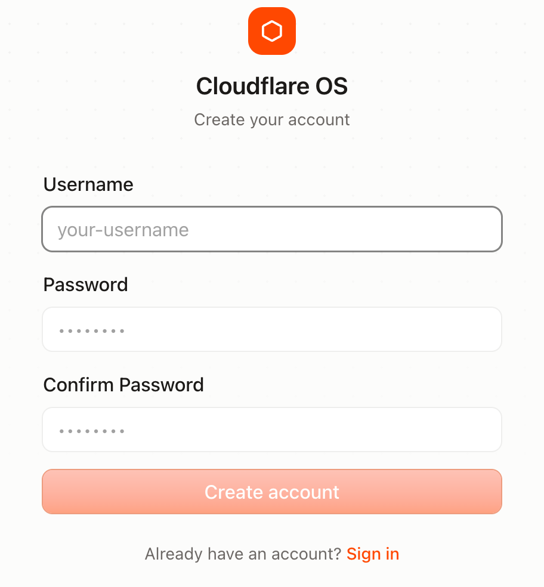
図: アカウント作成画面
次の3つを入力します。
入力できたら、オレンジの Create account ボタンを押します。成功すると、そのまま初回セットアップへ進みます。
第3章 · 3 作成後と再入場
Create account に成功すると、サインイン画面には戻らず、そのまま初回セットアップ（次の節）に進みます。初めての人は、この流れのまま進めば大丈夫です。
2回目以降に http://localhost:8787 を開いたときは、最初のサインイン画面から入ります。
1. Username に、登録したユーザー名を入れる
2. Password に、パスワードを入れる
3. オレンジの Sign in を押す
サインイン後は、セットアップ済みならホームへ、まだならセットアップが続きます。
注意
ユーザー名とパスワードは控えておいてください。ローカル用でも、忘れると入り直せなくなります。
第3章 · 4 初回セットアップ
初回だけ、「Let's set you up」（はじめに少しだけ設定）というウィザードが出ます。画面上部の点（進捗）が4つ並び、次の順です。

図: 初回セットアップ① プロフィール
表示名はそのまま Next で進めて大丈夫です。次の画面が、いちばん大事な AI モデルの登録です。
第3章 · 5 AIモデルを登録する
セットアップの2つ目は「Choose your model」です。ここで登録する AI モデルが、Cloudflare OS の核になります。チャットで話しかける相手（エージェント）は、このモデルを使って考え、コードや資料を書いてくれます。モデルが無いと、エージェントは動きません。
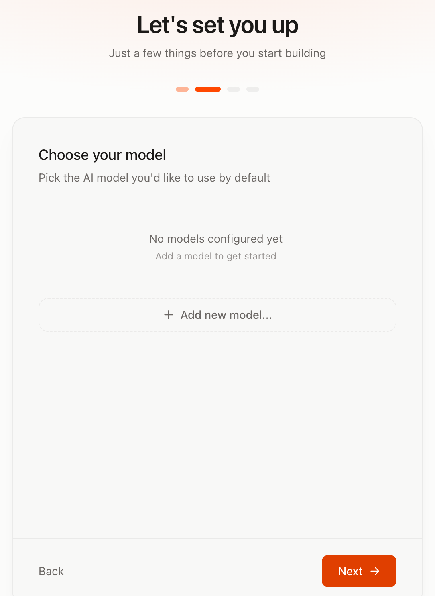
図: 初回セットアップ② モデル選択（Choose your model）
初めてだと「No models configured yet」と出ます。Add new model... を押して、モデル登録の画面へ進みます。
第3章 · 5 モデル登録と課金
Add new model を押すと、「Add AI Model」の画面が開きます。モデルを選び、API トークン（鍵）を入れて Add Model します。
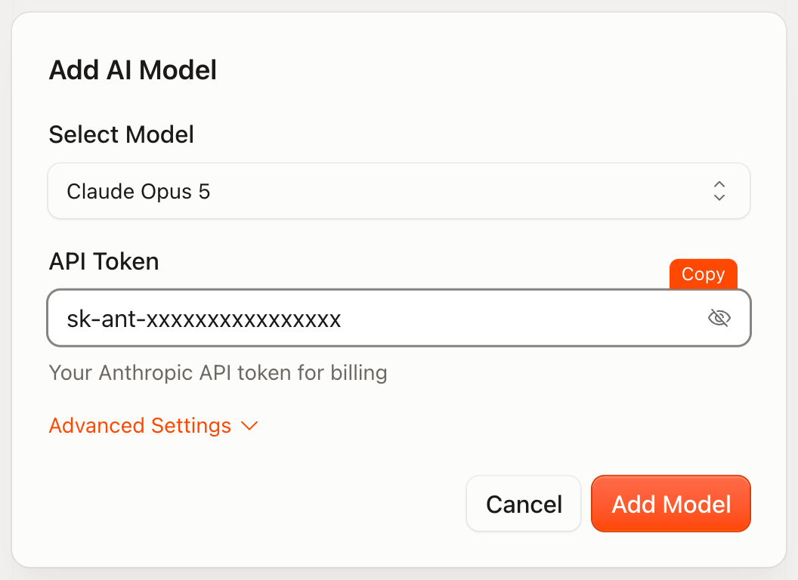
図: モデル追加 — モデル選択と API Token
ここで使う AI は、多くの場合従量課金（使った分だけ料金がかかる）です。Cloudflare OS 本体とは別に、Anthropic や OpenAI など各社のサービスを契約し、そこから API キー（API Token）を発行して、この欄に設定してください。キーが無いと登録を完了できません。
登録できたらセットアップに戻り、Next で次（外部連携）へ進みます。
注意
API キーはパスワードと同じ扱いです。他人に見せたり、図やメモに平文で残したりしないでください。画面ではマスク表示されます。料金の上限や請求先は、各社の管理画面で確認してください。
第3章 · 6 外部サービス連携
セットアップの3つ目は「Connect your services」です。GitHub や Slack、Google など、外のサービスを Cloudflare OS につなぐ画面です。つながると、エージェントや Gadget が Gatekeepers 経由でそのサービスを使えるようになります。
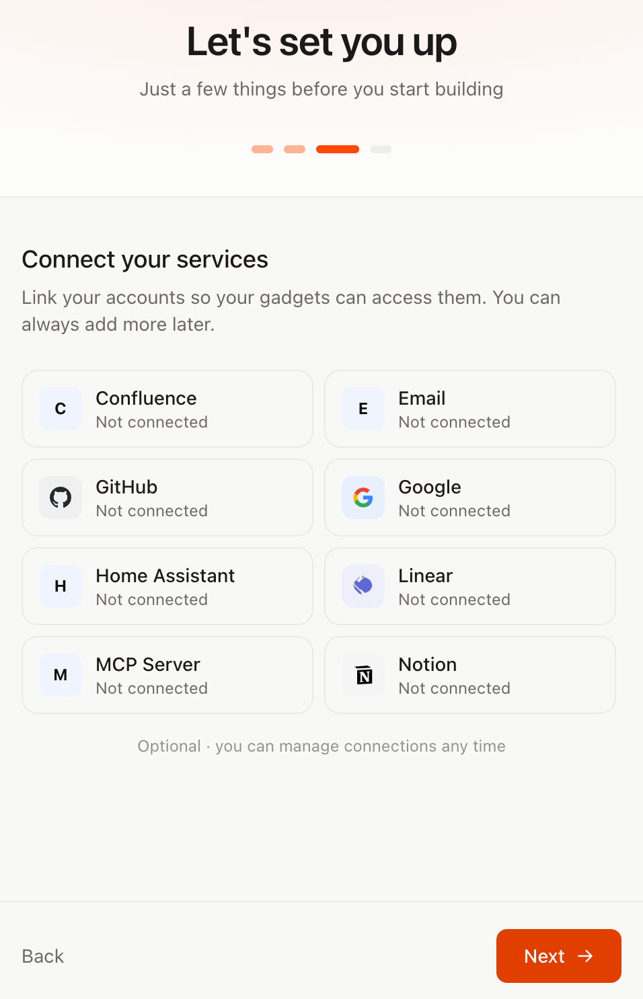
図: 初回セットアップ③ 外部サービス連携（Connect your services）
いずれも「Not connected」のままでも進める任意の設定です。本書のこの段階ではスキップして構いません。Next だけで次へ進んでください。つなぎ方の実践は第7章で扱います。あとからいつでも追加できます。
第3章 · 初回セットアップ完了
最後は「You're all set」です。できることの案内のあと、右下の Let's build を押すとホームに入ります。モデルが入り、外部連携は後回しでも、「エージェントが動く土台」は揃っています。
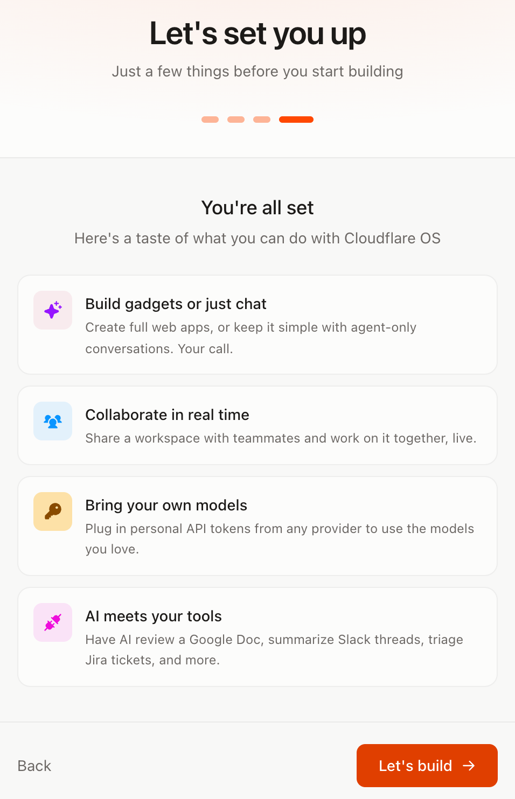
図: 初回セットアップ④ 完了（Let's build でホームへ）
次は、ホームで何が見えるかを確認します。
第3章 · 7 ホームの見方
ホームは、入ったあとのいちばん基本の画面です。中央に「What are we working on?」と入力欄があり、ここからエージェントへの依頼が始まります。

図: ホーム — 左ナビと中央の入力欄
左側の縦メニューが、画面全体の目次です。
下の GET STARTED は初めての人向けの例です。迷ったら左の Home に戻れば大丈夫です。
第3章 · 8 ワークスペース
ワークスペースは、いまの作業がまとまる場所です。会話・作ったアプリ（Gadget）・つながった Gatekeepers が、ワークスペースごとに分かれます。第1章のたとえどおり、「いま作業する場所」です。
左メニューの Workspaces を開くと、一覧が出ます。右上の Create workspace で新しく作れます。すでに作ったものがあれば、名前をクリックして中に入ります。
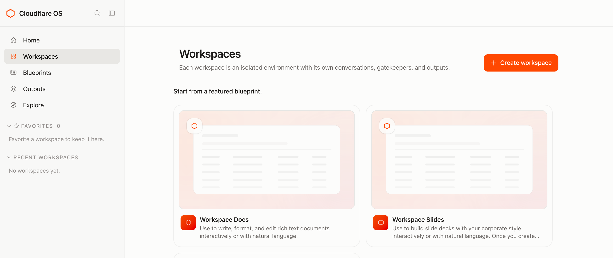
図: Workspaces — 作業場所の一覧
ホームの入力欄から会話を始めると、必要に応じてワークスペースが用意されます。最初は「Untitled Workspace」のような名前でも問題ありません。中身の操作（チャットで頼む・スライドを作るなど）は第5章以降で手を動かします。
第3章 · 9 Blueprints
Blueprints は、アプリのテンプレート置き場です。自分が公開・保存したアプリのテンプレートが一覧されます。ここからワークスペースを起こして、同じ型を自分用に使い始められます。データやパスワードはテンプレートには入りません（第1章のたとえどおりです）。
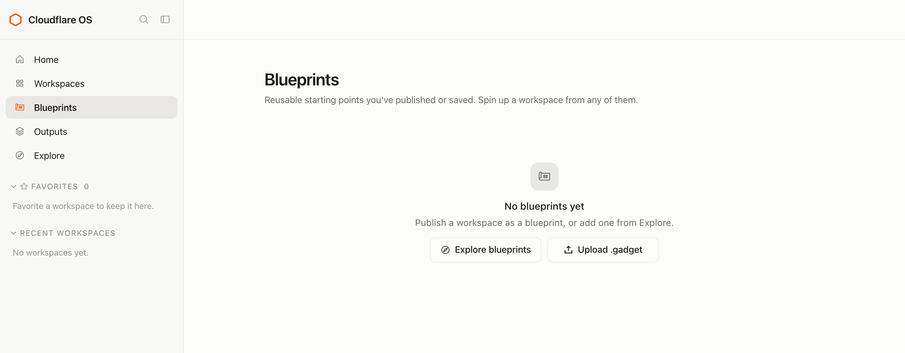
図: Blueprints — 自分用のアプリのテンプレート一覧
初めて開くと「No blueprints yet」と出ることが多いです。Explore blueprints で公開テンプレートを探すか、Upload .gadget でファイルから取り込めます。中身を作る話は第5章以降で十分です。今は「自分用のアプリのテンプレートの棚」と覚えてください。
第3章 · 10 Outputs
Outputs は、ワークスペースでできた成果をまとめて見る場所です。アプリ（Apps）・文書（Docs）・表（Sheets）・スライド（Slides）など、種類で絞り込めます。「どこに行ったっけ？」となったときの受け皿です。

図: Outputs — できた成果の一覧
まだ何も作っていないと「No outputs yet」と出ます。下の New Doc / New Sheet / New Slides から、テンプレート経由で新しく始めることもできます。まずは「成果が並ぶ棚」と押さえておけば十分です。
第3章 · 11 Explore
Explore は、おすすめのテンプレートを探す画面です。FEATURED に、文書・スライド・表計算などの型（例: Workspace Docs / Slides / Sheets）が並びます。開くとその型からワークスペースを作れます。あとで使うために保存することもできます。
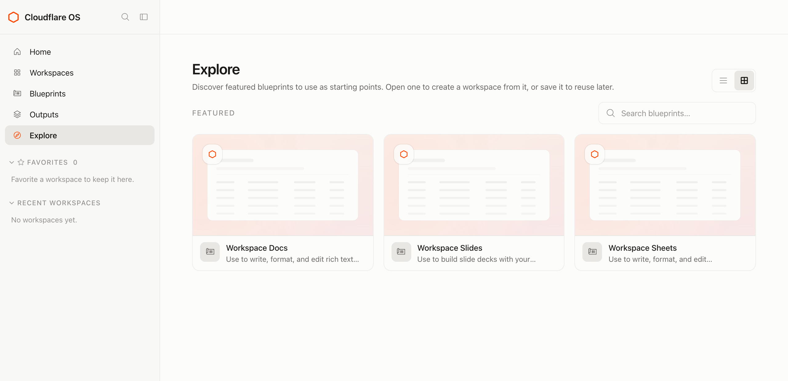
図: Explore — 公開されているテンプレート
Blueprints が「自分の棚」なら、Explore は「店先」に近いイメージです。第5章のスライド作りなどでは、ここから型を選ぶ流れが出てきます。今は場所と役割だけ知っていれば大丈夫です。
第3章 · 12 迷ったときの早見
どこを押せばよいか、ざっくり覚えておきます。仕組みの確認は第4章、実際に作るのは第5章からです。
| やりたいこと | まず開く場所 |
|---|---|
| 新しく話しかける | Home の入力欄 |
| 続きの作業場所を探す | Workspaces |
| 自分のテンプレートを見る | Blueprints |
| 公開の型を探す | Explore |
| できた成果を見る | Outputs |
| 道に迷った | 左メニューの Home に戻る |
画面の英語ラベルは、バージョンによって少し変わることがあります。ボタンの位置が近い・意味が同じなら、そのまま読み替えて進めてください。
第3章 · まとめ
ポイント
ログインとモデルの設定ができれば、この章は完了です。次の章では、設定した Cloudflare OS を実際に動かしながら、エージェントや Gatekeepersなどの機能を確認していきます。本格的にスライドなどを作るのは第5章からです。
第4章 · 章扉
4
手元の Cloudflare OS で、動きを確かめる
第4章 · 1 ここから始めること
第2章・第3章で、Cloudflare OS の設定を行い、アカウントと AI モデルまで用意できました。この章からは、設定した Cloudflare OS を使って、動作を確認していきましょう。
説明だけ読んでもイメージはつかめますが、画面を開きながら進めると格段にわかりやすいです。ターミナル（または PowerShell）で起動したまま、ブラウザの http://localhost:8787 にサインインした状態で読み進めてください。
起動用のウィンドウ（クライアント）を閉じてしまった場合は、第2章で取得した Cloudflare OS のフォルダに移動したのち、次のコマンドを実行してください。
cd ~/cloudflare-os pnpm run-local
フォルダの場所を変えている場合は、そのパスに合わせてください。起動できたら、また http://localhost:8787 を開きます。
まずは、エージェントに話しかけてみるところから始めます。つづいて Gadget、共有の二通り、Gatekeepers を、手元の動きとセットで見ていきます。本格的に作るのは第5章から。この章では「なぜそうなるか」を言葉にできることがゴールです。
第4章 · 2 エージェントに話しかけてみよう
エージェントは、日本語で話しかける相手です。コードはエージェントが書いてくれます。まずはホームを開き、中央の入力欄に次のような短い依頼を入れてみましょう。
例
今日やることメモ用に、3行だけ書ける簡単なメモ画面を作って
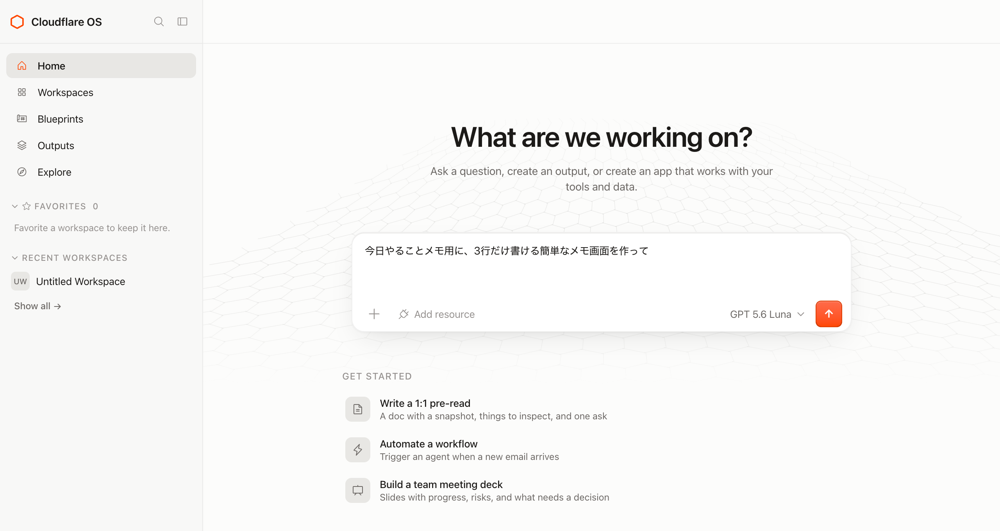
図: ホームに依頼を入力したところ（モデルは GPT 5.6 Luna の例）
右下の送信（↑）を押すと、作業用のワークスペースが開き、エージェントが動き始めます。
第4章 · 2 提案を見てから確定
しばらくすると、右側にメモ画面のプレビューが出ます。左には作業の様子（ファイルを書いた、など）が流れます。ここで大事なのは、いきなり確定ではないことです。多くの場合、下に Accept changes（変更を受け入れる）と Discard が出ます。
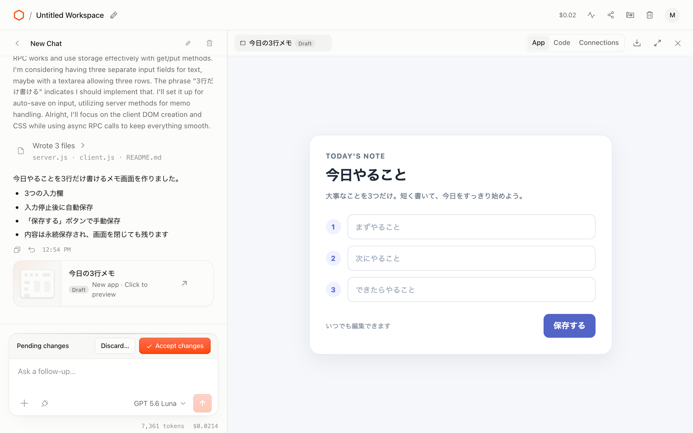
図: 提案中の画面。Draft と Accept changes に注目
内容でよければ Accept changes を押します。押すと確定し、自分用の小さなアプリ（次の節の Gadget）として手元に残ります。
第4章 · 2 できたものを触る
Accept のあと、メモ画面に文字を入れてみましょう。3行の欄に今日やることを書いて 保存する など、画面の案内どおりで構いません。
ここで、自分の想定と違うところがあれば、追加で依頼してみてください。今回の例では、タスクを入力する画面は出たものの、入力した内容が一覧で見える場所がありませんでした。そこで、一覧表示を足すよう追って依頼します。
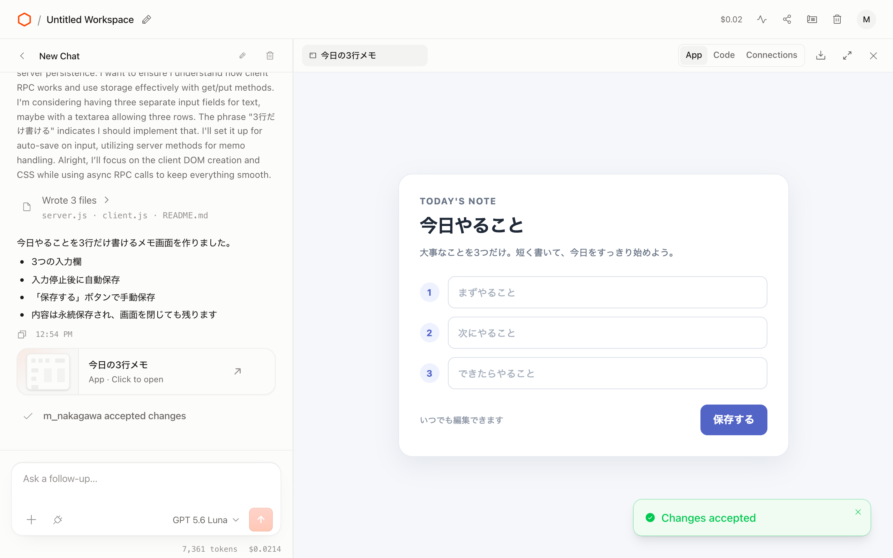
図: 確定直後のメモ。入力欄はあるが、一覧表示はまだない例
左下の Ask a follow-up...（追って聞く）に、直し方を書いて送ります。
第4章 · 2 追って直してもらう
今回送った追依頼の例です。
例（追依頼）
入力した内容が一覧で見えるようにしてください。3行の入力欄の下に、保存したタスクが表示されるリストを追加して
エージェントが直したあと、また Accept changes が出たら押します。下図のように、入力欄の下に「保存したタスク」の一覧が足されれば成功です。同じ会話の中で何度でも直せるのが、エージェントの使い方の基本です。
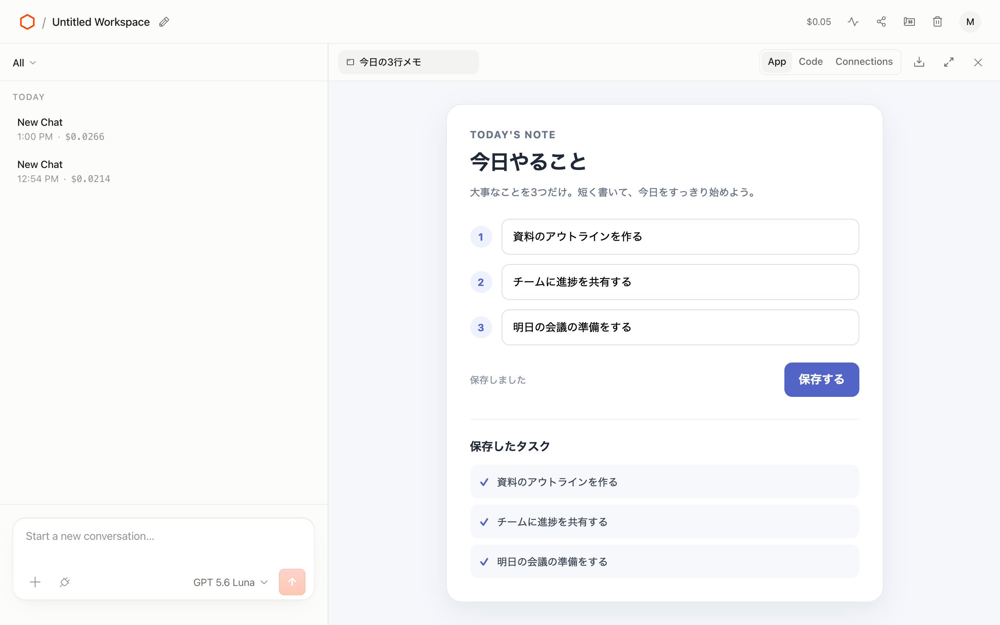
図: 追依頼を Accept したあと。一覧「保存したタスク」が付いた例
ポイント
たった数行のチャットで、実際に使えるアプリが手元に残りました。Claude や ChatGPT でアプリのコードを作った経験がある人もいるかもしれません。ただ、そのあと「どこに公開するのか」が課題になりがちです。Cloudflare OS では、作ったその場で動く道具として残るので、その問題が解消されます。
第4章 · 3 Gadget と Blueprint
さきほどの節で、「今日やること」のミニアプリを作りました。こうして作られたアプリのことを、Gadget と呼びます。自分専用の小さな道具で、直しても他人のコピーには影響しません。
一方 Blueprint は、そのアプリの型（アプリのテンプレート）です。自分が作ったものを「人にも同じような道具を持って使ってほしい」ときに使います。渡すのは中身のデータではなくコードのスナップショットなので、相手は自分用の Gadget を新しく起こして使います。あなたの Gadget を一緒に開くわけではありません。
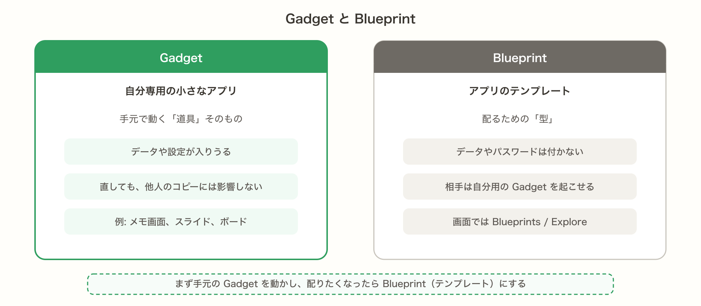
図: Gadget（自分の道具）と Blueprint（アプリのテンプレート）
データやパスワードは Blueprint には付きません。作り方と画面での見方を、このあとに整理します。
第4章 · 3 作り方と見方
Gadget の作り方・見方
作る — さきほどどおり、エージェントに頼んで Accept する。これがいちばん基本です。ホームやワークスペースのチャットから始めます。
見る — いま作業中のワークスペース内（タブ名など）で開けます。あとから探すときは、左メニューの Outputs を開いてください。ワークスペースでできたものが Gadget（アプリ）として一覧に表示され、今回の「今日の3行メモ」もここに並びます。
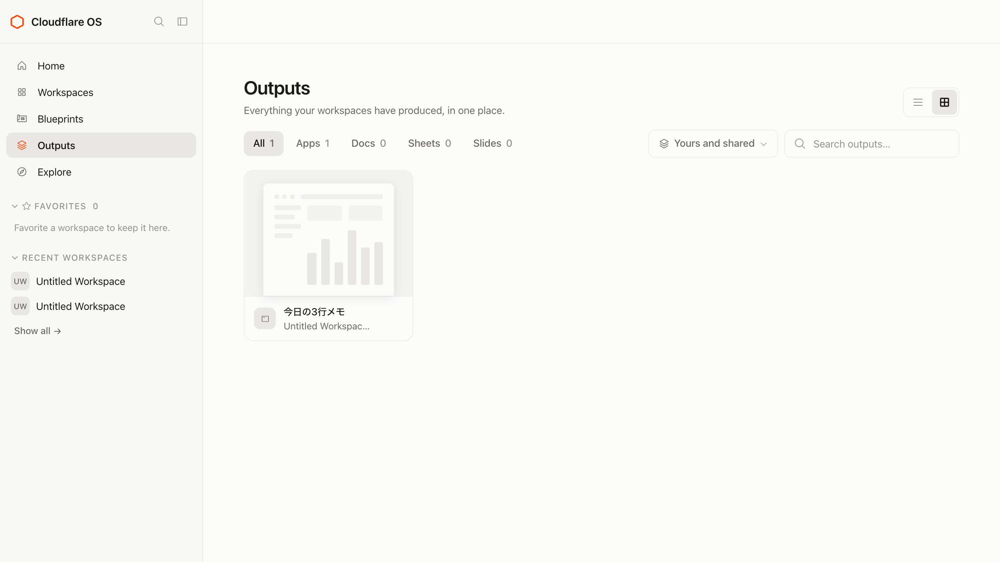
図: Outputs — できた Gadget（Apps）の一覧
Outputs には Docs / Sheets / Slides など種類のタブもあります。Gadget だけが並ぶ専用名ではなく、「できたもの置き場」だと思ってください。
第4章 · 3 Blueprint の作り方と見方
Blueprint の作り方・見方
見る — 左メニューの Blueprints。自分で保存・公開した型が一覧されます。まだ何も無いときは「No blueprints yet」と出ます。公開の型を探すなら Explore です。
作る — 画面の案内どおり、ワークスペースを Blueprint として公開する（Publish a workspace as a blueprint）か、Explore から取り込む／Upload .gadget でファイルを上げる、といった手順になります。バージョンでボタン名は変わることがあります。

図: Blueprints — 型の置き場（初回は空のことが多い）
この章では、まず Gadget を作って動かすところまでできれば十分です。Blueprint への公開は、「人に型だけ渡したくなったとき」に戻ってくれば大丈夫です。
第4章 · 4 共有の二通り
ほかの人と使うときは、ざっくり二通りです。第1章の図と同じ考え方です。
図: コピー（テンプレート）と共有（一緒に使う）— 第1章と同じ図
メモの中身を一緒に直したいなら共有。型だけ渡して各自で使わせたいなら Blueprint。迷ったら、まず個人用の Gadget のまま動かし、必要になってから決めて構いません。
第4章 · 5 Gatekeepers
Gatekeepers は、外のサービス（GitHub など）への出入りを見張る仕組みです。最初、エージェントも Gadget も外にはつながっていません。つなぐときは、使いたいリソースだけを選び、鍵は Gatekeepers が持ち、エージェントは直接持ちません。
図: 外へは Gatekeepers 経由 — 第1章と同じ図
さきほどのメモは、外のサービスなしでも動きます。GitHub や Slack をつなぐ操作は第7章です。第3章のセットアップで Connect your services をスキップしたのも、この順序のためです。
注意
外へ書き込む設定をするときは、権限の範囲を狭くしてください。読んだデータが、見てはいけない人に漏れないよう、組織のルールも確認します。
第4章 · まとめ
ポイント
話しかけて形が残るところまでできれば、この章は十分です。次の章では、同じ流れでスライドを本格的に作ります。
第5章 · 章扉
5
ゴールを決め、繰り返し直して仕上げる
第5章 · 1 ゴール
この章では、「来週の顧客ミーティング用のスライド」を完成させます。一発で完璧な依頼を書くことが目的ではありません。最初の依頼 → 見て判断 → 追って直す、を繰り返して、使える形に近づける流れを体験します。
第4章のメモより大きめの題材ですが、進め方は同じです。ホーム（または新しい会話）から始め、Accept で確定し、足りないところは追依頼で直します。
完成の目安
表紙・課題・提案・効果・次のステップの5枚があり、見出しが短く、顧客向けのトーンになっている。
起動とサインインは第3・4章と同じです。止まっているときは pnpm run-local で立ち上げ直してください。
第5章 · 2 最初の依頼
完成形を全部一度に書こうとせず、骨格が分かる依頼から始めます。枚数・構成・言語を決めておくと、あとで直しやすいです。
最初の依頼（例）
来週の顧客ミーティング用に、日本語のスライドを5枚作ってください。構成は「表紙」「課題」「提案」「効果」「次のステップ」で、見出しは短く、本文は箇条書き中心にしてください。
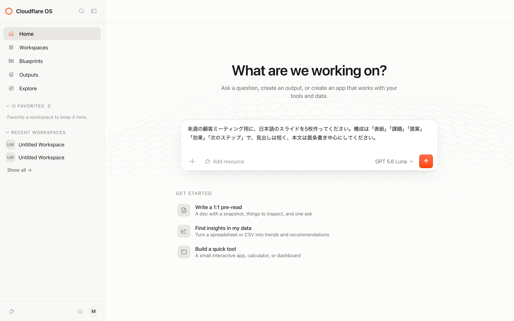
図: 最初の依頼をホームに入力した例
送信するとワークスペースが開き、エージェントが動き始めます。時間がかかっても、止まっているわけではないことが多いです。
第5章 · 3 提案を見て確定
プレビューが出たら中身をざっと見ます。この段階では「完成」ではなくたたき台です。問題なければ Accept changes を押し、手元のスライド Gadget として残します。
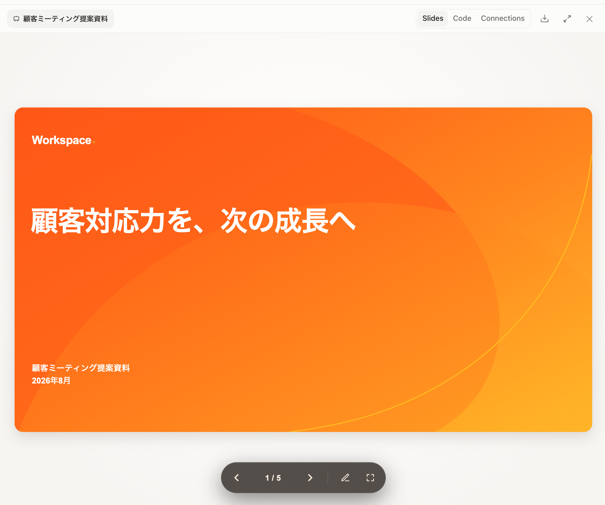
図: Accept 後のスライド。下の矢印で各枚をめくれる
Accept のあと、各枚をめくって見出しと箇条書きを確認します。文字が切れていないか、構成どおりかもここで見ます。気になる点はメモして、次の追依頼に使います。
第5章 · 4 追って直す
一発で理想どおりになることは少ないです。Ask a follow-up に、直したい箇所を具体的に書きます。「全体をよくして」より、「2枚目の見出しを短く」「3枚目は3点に絞る」の方が効きます。
追依頼（例）
2枚目「課題」の見出しをもっと短くして。3枚目の提案は箇条書きを3点に絞って。全体のトーンをビジネス向けに整えて。
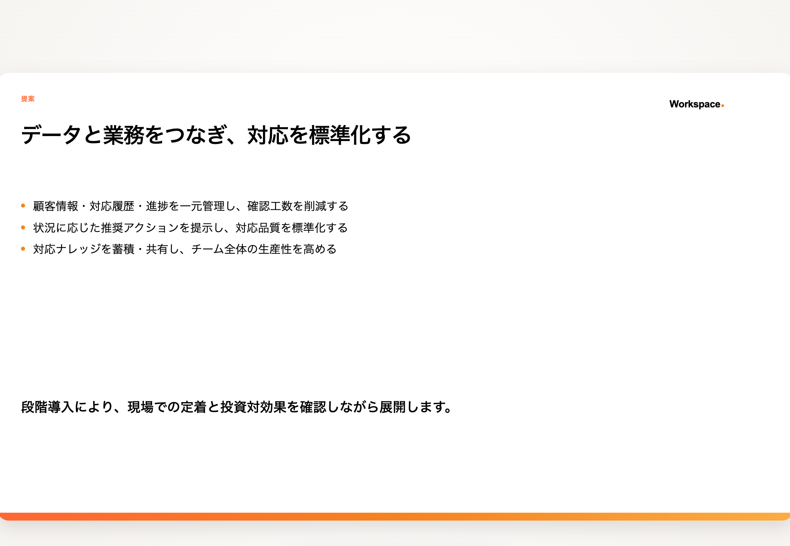
図: 追依頼後の「提案」ページ例。見出しと3点の箇条書き
また Accept が出たら押します。まだ足りなければ、同じ会話で何度でも繰り返します。ゴールの5枚構成とトーンが揃うまでが、この章の本線です。
第5章 · 5 仕上げの確認
完成の目安に照らして、次を自分でチェックします。
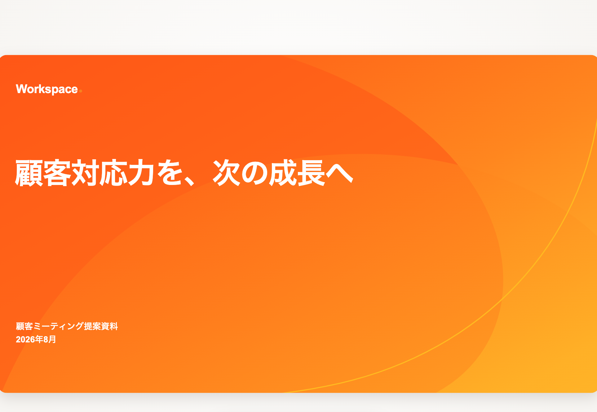
図: 表紙の例。「顧客対応力を、次の成長へ」
表紙だけでなく、2〜5枚目の中身もめくって確認します。次のページに、実際にできた内容のサンプルを載せます。
第5章 · 6 できた中身の例
依頼と追依頼のあと、こんな中身が手元に残ります（一例）。左上から「課題」「提案」「効果」「次のステップ」です。見出しと箇条書きが画面内に収まっているかを見ます。
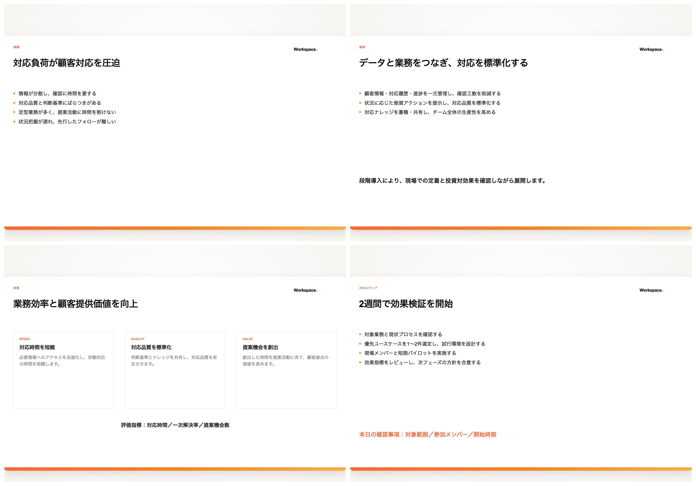
図: 2〜5枚目の中身サンプル
共有は必須ではありません。一緒に直す相手がいれば第4章の「共有」、型だけ渡すなら Blueprint です。まずは自分用に使える状態になれば、この章はクリアです。
第5章 · まとめ
ポイント
完璧な一発依頼より、「作る → 見る → 直す」のループが本体です。次の章では、同じループで業務向けの小さなアプリを仕上げます。
第6章 · 章扉
6
欲しい道具を、繰り返し直して自分用にする
第6章 · 1 ゴール
この章では、「今週の優先タスク看板」を作ります。列は「未着手」「進行中」「完了」。カードを追加・動かせる、社内向けの小さなボードです。
第4章のメモより操作が多く、第5章のスライドとは違う「業務の道具」です。進め方は同じで、ゴールを決め、最初の依頼、Accept、追依頼、という繰り返しで仕上げます。
完成の目安
3列の看板があり、カードを追加できる。担当者を付けられる。未着手と他の列が視覚的に区別できる。
題材はホワイトボードや三目並べでも構いません。大事なのは「何ができたら成功か」を先に決めることです。
第6章 · 2 最初の依頼
誰が・何のために・どんな操作かを短く書きます。長い要望を一度に詰め込まず、骨格から入ります。
最初の依頼（例）
社内向けに「今週の優先タスク看板」を作って。列は「未着手」「進行中」「完了」の3つ。カードを追加・移動できる簡単な画面にして。日本語UIで。
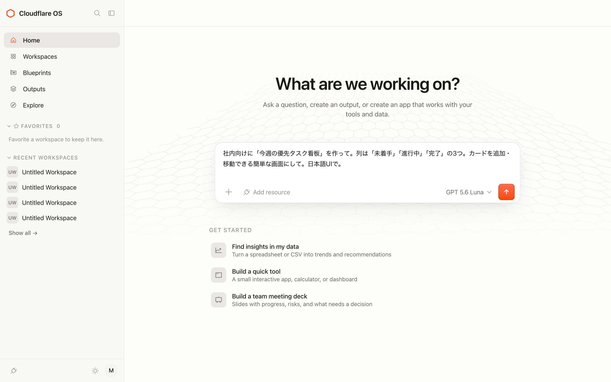
図: 最初の依頼を入力した例
送信して、提案が出るまで待ちます。プレビューで列とカードが動けそうか、ざっと確認します。
第6章 · 3 触って確かめる
Accept changes で確定したら、自分で触ってみます。カードを1枚追加する、列をまたいで動かす、など完成の目安に近い操作を試します。
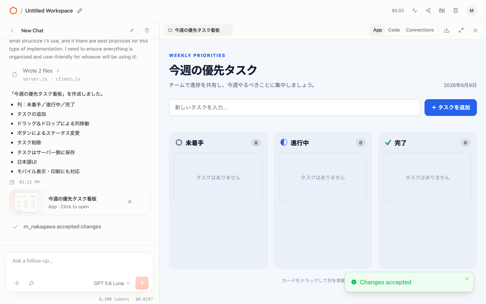
図: Accept 後の看板の例
想定と違う点（担当者が書けない、列が見分けにくい、など）をメモします。それが次の追依頼の材料です。
第6章 · 4 追って直す
ゴールに足りない機能を、具体的に追依頼します。一度に全部直そうとせず、優先度の高いものからで構いません。
追依頼（例）
カードに担当者名を1行で付けられるようにして。未着手の列の色を薄くして区別しやすくして。
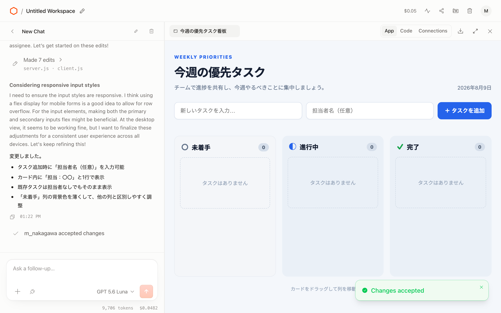
図: 担当者と列の見た目を直した例
Accept のあと、もう一度カードを追加して確認します。完成の目安を満たすまで繰り返します。作ったあとも同じ会話で「このボードに今日のタスクを3つ追加して」と頼めるのも、Gadget の使い方のひとつです。
第6章 · 5 仕上げの確認
完成の目安に照らして、自分で触って確かめます。全部チェックできれば、この章は十分です。
足りない項目があれば、同じ会話で具体的に追依頼します。問題なければ、作ったあとも「今日のカードを3つ追加して」などと頼んで使えます。スライド（第5章）が「見せる道具」なら、看板は「毎日触る道具」です。同じループで、用途だけが違います。
この章で得たこと
業務向けの小さなアプリも、スライドと同じく「依頼 → Accept → 触る → 追依頼」で形になる。操作が増えても、型は変えない。
第6章 · まとめ
ポイント
ゴールを決めて何度も直す流れは、スライドと同じです。次の章では、GitHub など外のサービスとつなぎます。
第7章 · 章扉
7
Gatekeepers で GitHub などと連携する
第7章 · 1 ゴール
この章では、GitHub を Gatekeepers 経由でつなぎ、Issue を見る道具を作るところまで進めます。環境によって接続の仕方が違うので、画面の場所と手順を押さえます。
第3章で Connect your services を飛ばした人も、同じ入口に来られます。会社のアカウントを使う前に、社内ルールを確認してください。まずは個人の練習用リポジトリが無難です。
完成の目安
Gatekeepers と OAuth で GitHub をつなぎ、Connections で smilior/smilior.com のように使うリポジトリだけ選ぶ。Issue ダッシュボードを頼んで手元に残す。
ローカルで自分の PC から動かすときは、画面の前に GitHub OAuth アプリの設定が要ります。手順はこの章に書きます。会社などで用意済みの環境だけ触る人は、OAuth と .env の節を飛ばして構いません。Gatekeepers から GitHub をつなぐところ（接続と配線）から読んでください。
第7章 · 2 必要なものだけ
第4章でも書きましたが、Gatekeepers は GitHub など外のサービスとのつなぎ口です。最初、エージェントも Gadget も外にはつながっていません。つなぐときは、使うリポジトリなどだけを選びます。ログインの鍵は Gatekeepers 側に残り、エージェントには渡りません。
GitHub なら、「アカウント全部」ではなく「この練習用リポジトリだけ」にします。ワークスペースを共有していると、相手に権限があるかも Gatekeepers が見ます。
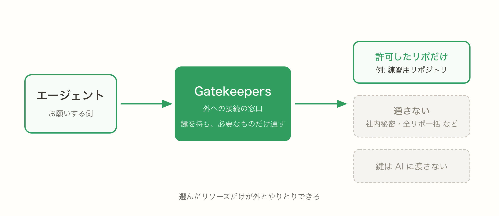
図: 選んだリソースだけが外とやりとりできる
第7章 · 3 Gatekeepers
左下付近の Gatekeepers アイコン、または /gatekeepers を開きます。AVAILABLE に GitHub・Slack・Google などが並びます。ここでつないだアカウントを、あとから各 Gadget の Connections に足していきます。
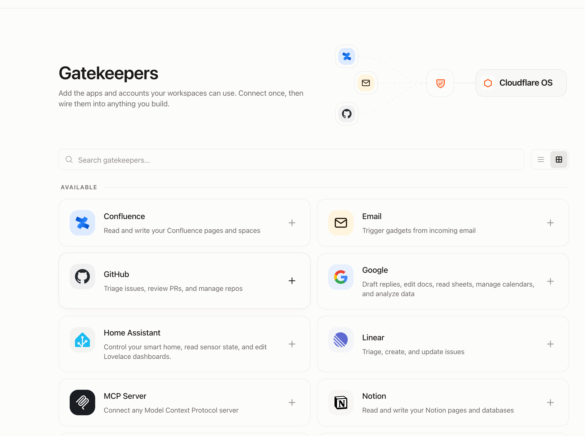
図: Gatekeepers の一覧。GitHub などをここから足す
初回セットアップの Connect your services も、同じ種類の入口です。どちらから入っても、外とのつなぎは Gatekeepers 側に残ります。
第7章 · 4 GitHub OAuth
Connect GitHub の画面に、Client ID や Secret の入力欄はありません。ローカルでは、先に GitHub で OAuth App を作り、その値を自分の PC 側に書きます。無いと「GitHub Gatekeeper Not Configured」で止まります。/admin の操作ではありません。用意済みの環境では、この節と次の「ローカル側の設定」は不要です。
GitHub の Settings → Developer settings → OAuth Apps（GitHub Apps ではない）→ New OAuth App を開き、次を入れます（ローカル localhost:8787 の例）。
| 項目 | 入れる内容（ローカル例） |
|---|---|
| Application name | 任意（例: Cloudflare OS Local） |
| Homepage URL | http://localhost:8787 |
| Application description | 任意。空欄のままでよい |
| Authorization callback URL | http://localhost:8787/gatekeeper/github/oauth（末尾スラッシュなし。ここだけ正確に） |
| Enable Device Flow | オフ（チェックしない） |
Register application のあと Generate a new client secret を押し、Client ID と Client secret を控えます。次のページで、この値をローカルの Cloudflare OS に書き込みます。
注意
OAuth App と GitHub App は別物です。ここは OAuth App を使います。サーバーを公開 URL で動かしているときは、callback URL もその URL に合わせます。
第7章 · 5 ローカル側の設定
GitHub で控えた ID と Secret は、Connect 画面には貼りません。第2章で clone した cloudflare-os フォルダを開きます（Windows の起動手順は P.20、Mac は P.17 付近。ホーム直下の cloudflare-os であることが多いです）。
その中の packages/gatekeeper-github フォルダに、.env という名前のファイルを作り、次の2行を書きます。書いたらターミナルで pnpm run-local を一度止めてから起動し直してください。
.env に書く内容
CLIENT_ID=（控えた Client ID）
CLIENT_SECRET=（控えた Client secret）
ファイル名は先頭にドットの付いた .env です（env.txt ではありません）。
保存して再起動すると、Gatekeepers の Continue to GitHub から GitHub の許可画面に進めます。
大切に扱う
Client ID と Client secret は、GitHub への合鍵に近い大事な情報です。メモやパスワード管理アプリに控え、他人に渡さないでください。.env も GitHub など公開の場所に載せないでください。載ると、第三者があなたの代わりに接続できてしまいます。
まだ Not Configured と出るときは、次を順に確認します。(1) ファイルが packages/gatekeeper-github/.env にあるか (2) 行名が CLIENT_ID / CLIENT_SECRET か (3) 保存のあと pnpm run-local を止めて起動し直したか。
第7章 · 6 GitHub 接続
準備ができたら、Gatekeepers で GitHub のカードを押します。Connect GitHub の説明が出ます。Repository / Issue / Pull Request が使えること、Gatekeepers が GitHub と Gadget のあいだに入ることが書いてあります。Continue to GitHub を押すと、ブラウザで GitHub の許可画面に移ります。
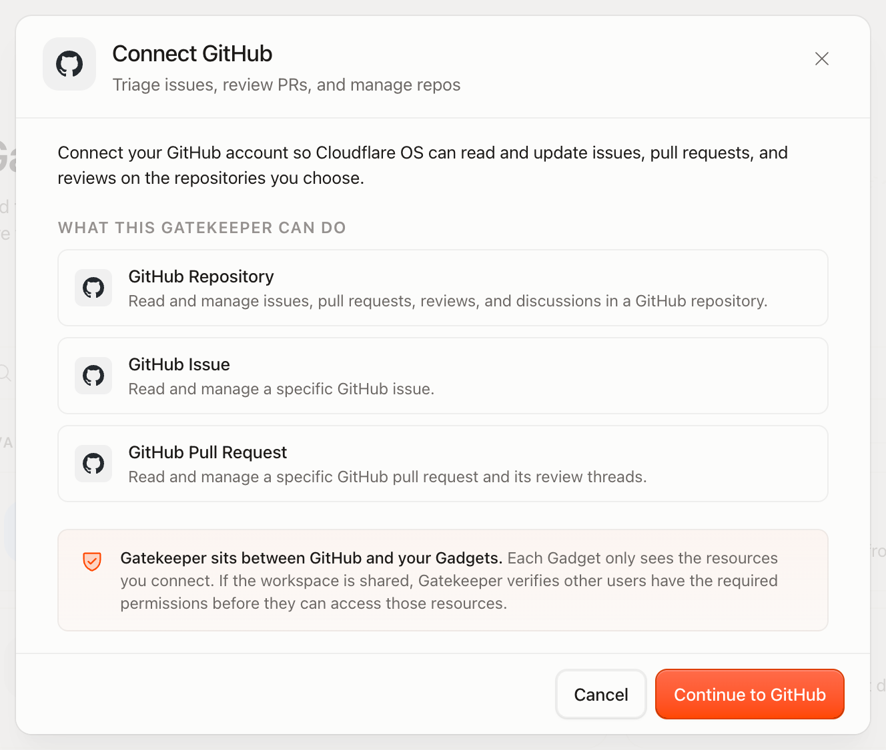
図: GitHub 接続前の説明。Continue to GitHub で認証へ
許可したあと、使うリポジトリなどを選びます。社内の秘密リポジトリや、触ってはいけない組織アカウントは渡さないでください。まだ Not Configured なら、ローカル側の設定と再起動を見直します。
第7章 · 7 Gadget に配線
GitHub アカウントをつないだだけでは、道具はまだ外を触りません。Gadget を開き、Connections タブで「この道具が使ってよいもの」を足します。
Connect resource → GitHub → Repository と進み、smilior/smilior.com のように使うリポジトリだけ選びます。「このリポジトリだけ」の指定はここでします。つながると、次の図のように一覧に出ます。
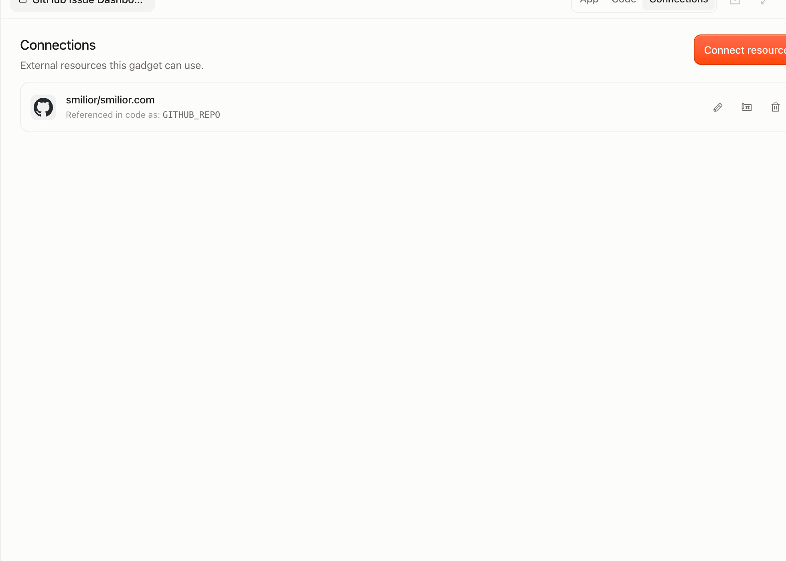
図: Connections。smilior/smilior.com だけを配線した例
別のリポジトリを触らせたくなければ、ここへ足さないだけです。道具ごとに、つなぐ先を分けられます。
第7章 · 8 頼んで使う
Connections でリポジトリを選んだあと、同じワークスペースのチャットで頼みます。先に配線、次に依頼、の順です。今回は Issue ダッシュボード を作ります。
依頼（例）
smilior/smilior.com の Issue の一覧を表示するダッシュボードを作って。また、完了と未完了の件数、完了の傾向を分析できるグラフが欲しいです。
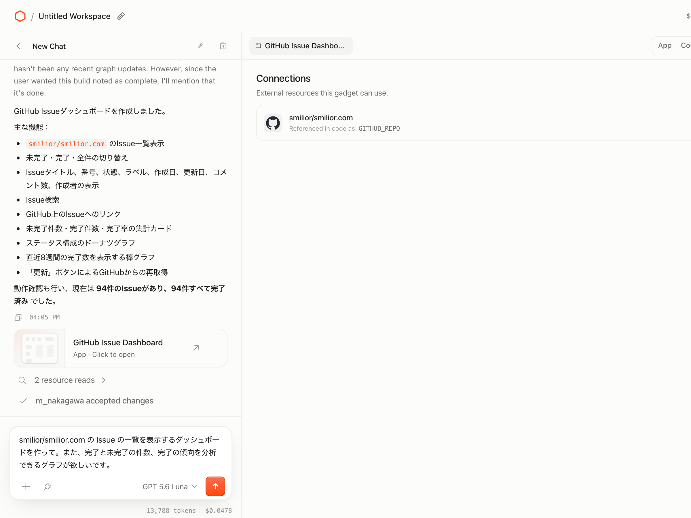
図: 右に smilior/smilior.com の接続、左で依頼と Accept
提案を確認して Accept changes を押すと、Gadget が手元に残ります。Connections にリポジトリを足す前に同じ依頼をしても、GitHub のデータは取れません。
第7章 · 9 できたダッシュボード
Accept すると、Gadget の App タブにダッシュボードが残ります。総件数、未完了と完了の数、完了の傾向グラフ、Issue 一覧が並びます。見ているリポジトリは Connections の smilior/smilior.com です。
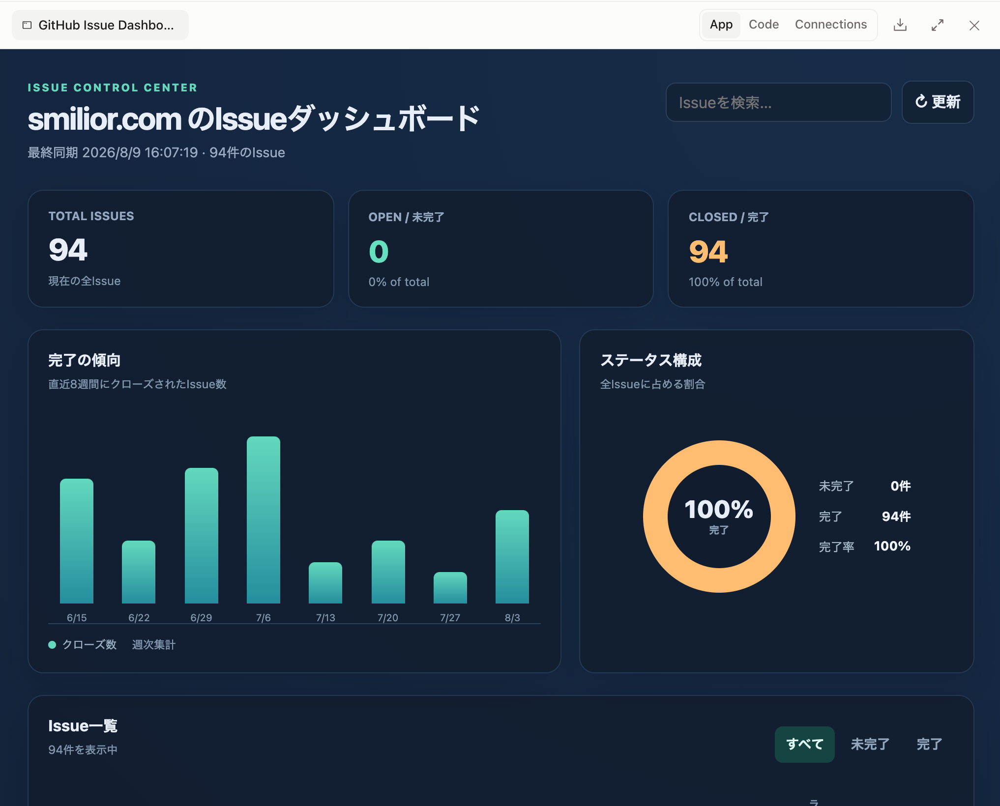
図: Issue 一覧と完了／未完了・傾向グラフの例
ポイント
外とつなぐときは、鍵を丸ごと渡さず、使うリポジトリだけ通します。先に Connections で配線してから頼む、と覚えてください。
第7章 · まとめ
ポイント
Not Configured なら、まず .env と再起動を確認します。つながったあとは「このリポだけ配線 → 頼む」です。
おわりに
この本では、Cloudflare OS を開き、エージェントに頼み、スライドや小さなアプリを残し、GitHub などを Gatekeepers 経由でつなぐところまで手を動かしました。完璧な一文を一発で書くより、作って・見て・直す繰り返しの方が、現場では役に立ちます。画面は Early Access で変わりますが、この順番は残ります。
押さえておきたいのは、Cloudflare OS が向かう先です。全社の基幹を置き換えるような大きなアプリを作る場所ではありません。社内の SE がなかなか手が回らない一方で、現場の人は毎日困っている。そんな小さなアプリを、一般の従業員が自然言語で作れるようにする。メモ、看板、Issue の一覧。第5章から第7章で触れたものは、その一例です。
エージェントと小さなアプリを仕事に載せていくと、人それぞれの業務の進め方が少しずつ変わります。組織の中では「作ったものをどう公開し、どう配るか」がいつも難題ですが、共有や Blueprint など、Cloudflare OS にはそのための仕組みがあります。個人の工夫が、チームの道具に育ちやすい土台です。
まずは小さく始めてください。一本書いて Accept し、明日また直す。使ってみて初めて、自分にとっての価値が見えてきます。
最後まで読んでくださり、ありがとうございました。あなたの次の一歩に期待しています。
smilior.com
中川将広
付録A · 用語集
| 用語 | ひとこと |
|---|---|
| エージェント | 自然言語で話しかけ、作業を進めてもらう相手 |
| Gadget | 自分専用の小さなアプリ・道具 |
| Blueprint | アプリのテンプレート（データは付かない） |
| Gatekeepers | 外のサービスへつなぐ仕組み。鍵を持ち、必要なものだけ通す |
| ワークスペース | 会話・成果・接続がまとまる作業場所 |
| Outputs | できた成果（Apps / Docs / Slides など）の一覧 |
| Explore | おすすめの型を探す店先 |
| Accept changes | 提案を手元に確定して残す操作 |
| AI Gateway | モデル利用の窓口・見える化（環境による） |
| Your Company OS | 自社の言葉やつなぎ先を載せた自社向けの場所（はじめに・おわりに。配り方は第4章の共有と Blueprint） |
付録B · 操作早見
pnpm run-local → http://localhost:8787packages/gatekeeper-github/.env に CLIENT_ID / CLIENT_SECRET → 再起動http://localhost:8787/gatekeeper/github/oauth付録C · 参考リンク
リンク先の構成は更新で変わることがあります。本書は非公式の学習用ガイドです。
奥付
Cloudflare OS 入門
小さなアプリを、安全につなぎながら作る
2026 年第1版
対象: 非エンジニア寄りの実践入門
検証環境: ローカル起動（pnpm run-local）/ Cloudflare アカウント（任意）
Cloudflare OS は Early Access です。画面や仕様は更新により変わることがあります。本資料は非公式の学習用ガイドであり、Cloudflare の公式ドキュメントではありません。